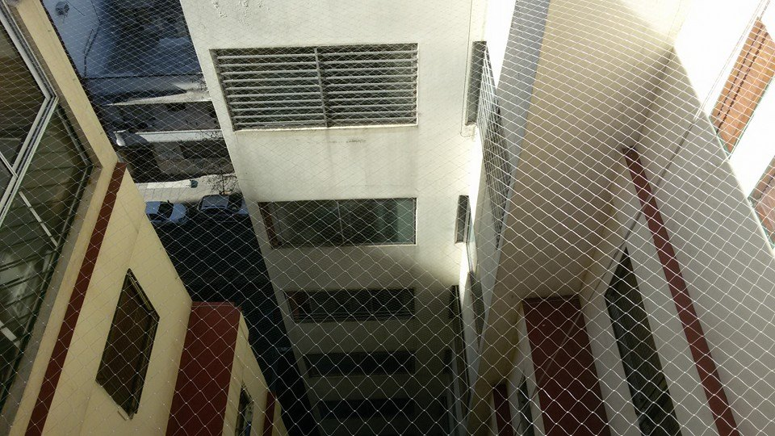

Usar protecciones con red en balcones donde hay niños es una medida crucial para garantizar su seguridad y prevenir accidentes graves relacionados con caídas desde alturas. Estas redes de seguridad son una inversión en la seguridad de los más pequeños y en la tranquilidad de los padres y cuidadores.
Nuestras redes
Protecciones para Niños
Protecciones para Mascotas
Nuestras redes de protección para mascotas son esenciales para evitar accidentes y que las mascotas se caigan desde alturas peligrosas. Proporcionan un entorno seguro para que las mascotas disfruten del aire libre sin riesgo, brindando tranquilidad a los dueños.

Protecciones para Edificios
Con nuestro servicio para edificios facilitamos la necesidad de que cada propietario proteja su propio balcon de plagas proporcionando una proteccion mas genealizada.
Protecciones para plagas
Las redes disponibles para palomas o murcielagos son ideales para los problemas de nidos indeseados y nos libran de problemas de suciedad o enfermedades.